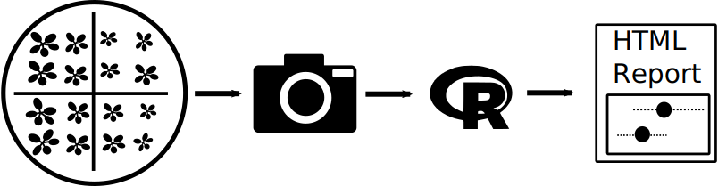

Introduction to rosettR
A major area of interest in plant science is studying the effects that manipulating genes have on the plant phenotype. For example, if a plant lacks a certain gene and then grows much slower in the presence of salt in the growth medium versus a wildtype plant, one may speculate that that gene confers salt tolerance.
As often is the case in biology, such effects on phenotype can be subtle requiring experiments with large numbers biological replicates to enable accurate conclusions. To support our research, we wanted to perform a large number of phenotyping experiments for Arabidopsis and needed a solution that was
- Easy to setup and operate
- Affordable
- High-throughput
- Fast
- Easy and efficient to use for studying multiple different treatments and genotypes
Since none of the available solutions met our requirements, we decided to implement our own experiment protocol and to bundle the data analysis as an R-package. Since we found the package very useful, we provide it to the public in the hope that it will be valuable to other plant scientists with similar needs.
The supported phenotyping experiment
rosettR can be used to estimate the areas of seedlings that grow in predominantly two dimensions such as the rosettes of Arabidopsis thaliana seedlings. Briefly, plants are grown on solid medium in tissue culture plates and photographed at set intervals. Images are then analyzed using the functions implemented in this package to estimate area and relative growth rate of the seedlings over time. These estimated areas can then used to compare the differences between genotypes and the effect of applied treatments.

Automated image analysis
The image analysis is fully contained in the R-package and requires minimal user interaction. Simply place the image files in the directories created during experiment setup and start the analysis. Plate displacement and rotation is automatically taken care of.
FLOWCHART FIGUREAutomated reports
rosettR comes with template knitr reports that directly can be compiled without editing.The layout report provides a tailored randomized block design
The quality control report gives detailed information on the image analysis
The are comparison report shows significant effects of treatments and genotypes
Requirements
- Any off-the-shelf digital camera
- Growth chamber and basic lab materials
- A PC (Windows, Linux) with R and the EBImage package